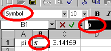
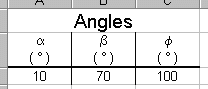

|
Physics Laboratory |

|
Excel Tutorial #5 |
|
4. Algebra E |
Displaying Symbols |
6. Trigonometry F |
You will often find it convenient to display symbols such as a, b, D, p, @ and ± within your worksheet. Depending on which symbols you wish to display, there are at least two methods of doing so.

With the first method you can simply change the font face to Symbol and type the appropriate letter. For example, to display the Greek letter alpha, a, first type the letter "a". Then highlight the letter and change the font to "Symbol". That's all there is to that method.Below are some of the characters you can display by changing the font to "Symbol".
|
|
Unfortunately not every character you will wish to use can be displayed with the above method. Some characters like, ° (degree), ±, × and ÷ can be displayed by using a second method.
To get these and certain other characters to appear in your worksheet, press the <ALT> key while you use the numeric keypad to type in the appropriate numerical code. For example, in order to create the degree symbol ( ° ), press the <ALT> key while you type 0176 with the numeric keypad, not the number keys on the main keyboard.
Below are some of the characters you can display with the <ALT>+number method.
|
|
 Note that the numbers entered above must be
entered with the numeric keypad, not the main keyboard!
Note that the numbers entered above must be
entered with the numeric keypad, not the main keyboard!

To the right is a worksheet example using the two methods described above to create symbols and Greek letters. Can you reproduce it?
If you have a question or comment, send an e-mail to
.
|
4. Algebra E |

|
6. Trigonometry F |
Copyright © 2000, Clemson University. All Rights Reserved.
This page was created by
.